The solid-state transformer (SST) is a power-electronic replacement for the 60 Hz iron-core transformer: a stack of series-connected silicon-carbide converter cells takes 10–35 kV AC straight to a regulated, isolated 800 V DC bus, collapsing the transformer, UPS, PDU and rack rectifier of today's data hall into one block. The physics is proven and the first commercial units exist — but in September 2026 the technology is at the productised-by-a-few, deployed-by-almost-none stage. NVIDIA's own execution guidance puts the transformer-rectifier unit (a conventional transformer plus a rectifier) in the 2027 800 V DC halls and the SST in the ~2029–2030 slot. The binding constraints are not the converter's efficiency but its overload margin, its fault behaviour, its cost per kilowatt, the absence of a US codes-and-listings path for 800 V DC and MV-in-the-hall equipment, and a US grid whose interconnection queue and transformer lead times an SST does nothing to shorten. Commercially the field splits by layer: the rack-shelf incumbents (Delta, LITEON, Megmeet) are already shipping 800 V hardware; the facility incumbents (Schneider, Eaton, Vertiv, ABB, Hitachi Energy, Siemens) are selling the reference design, the medium-voltage UPS and the transformer capacity everyone waits on; the SST pure plays (Sungrow's EnerNeo, Heron Power, Zhonhen, Sinexcel) hold the architectural endorsements but, with one exception, not yet the orders.
Chapters 2–4 teach the technology from first principles and assume high-school physics plus curiosity. Chapters 5–6 are the limitations, split deliberately into what is intrinsic to the converter (chapter 5) and what is imposed by the US grid, supply chain and code environment (chapter 6) — a distinction that matters for sales conversations, because the first set is the vendor's problem to engineer away and the second set is the customer's problem regardless of vendor. Chapters 7–8 place the companies. Figures numbered Figure N are either hand-drawn schematics or charts plotted from the numbers in the text; every plotted number is either sourced or explicitly computed.
A solid-state transformer does at kilohertz, with semiconductors, what a 60 Hz transformer does with iron and copper — and because it is a converter rather than a magnetic circuit it can also rectify, regulate, isolate faults, and talk to the grid. The price of that flexibility is that it is a computer-controlled machine with the overload manners of a computer, not of a block of iron.
A conventional data hall delivers power as low-voltage AC. Utility medium voltage (in the US, most often a 12.47–13.8 kV or 34.5 kV feeder) is stepped down by a 60 Hz transformer to 480 V, passed through a double-conversion UPS, distributed at 415 V or 480 V through PDUs and busway, and rectified inside each rack to a 48–54 V DC busbar that the compute boards convert to the sub-1 V rails the silicon needs. That chain served a 10–20 kW rack well. It does not serve a rack that draws hundreds of kilowatts on its way to a megawatt, because current — not power — sizes conductors, and current at 54 V for one megawatt is 18.5 kA. NVIDIA's rack roadmap moved from ~120 kW (GB200 NVL72, 2024) to ~200 kW-class racks in 2026 and states 1 MW-plus racks for the Kyber generation from 2027; it is that last step that forced the bus-voltage question.[1]
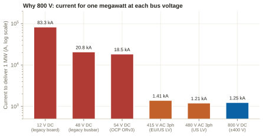
In October 2025 NVIDIA published its 800 V DC architecture white paper for the Kyber-generation racks. Its case rests on conductor physics: through the same copper cross-section, 800 V DC carries 157% more power than 415 V AC (1.7 kW/mm² against 0.6), where the common North American upgrade to 480 V AC buys only 16%; 1500 V DC would carry 382% more but is parked as a long-term target because indoor UL/NEC coverage, certified components and arc-flash clearances do not yet exist for it in rack spaces.[1] The bus NVIDIA chose is single-ended 800 V DC (positive, return, protective earth) rather than the bipolar ±400 V of the OCP standard: bipolar has theoretical grounding and fault-isolation merits, but it needs three-pole DC breakers that the industry does not stock, and a mid-point reference brings load-balancing and fault-detection complications at hall scale. The rack's DC-DC input is fused on both rails with reinforced isolation so that ±400 V equipment can still feed it.[1] Inside the rack, 800 V is converted straight to 12 V with a 64:1 LLC converter and matrix transformer, eliminating the 400→50 V and 50→12 V stages of today's tree for a further ~1% efficiency and 26% less board area in the space beside the GPU.[1]
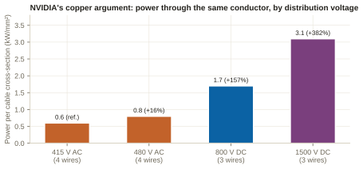
The white paper then lays out how the 800 V is made, as an evolution rather than a single design: (1) today's 415 V AC hall; (2) a transitional hall where an 800 V DC "side power rack" of rectifiers sits beside each compute rack — a white-space retrofit that adds a conversion stage but gets density up now; (3) facility-level AC-to-DC rectifiers fed from low-voltage AC below the MV/LV transformer, in ~1.5 MVA strings paralleled on a common DC bus at ~99% efficiency, mature from BESS and renewables; and (4) direct medium-voltage conversion — an "MV rectifier" or a solid-state transformer — taking e.g. 35 kV AC to 800 V DC in units as large as 7.5 MVA at 98.5% or better, eliminating the 480 V layer entirely. NVIDIA's own words rank them: the MV rectifier is "a proven, high-capacity" path with "supply chain readiness" that is "a faster and proven path for quick 800 VDC deployment", while the SST is the "future proof" option whose multi-megawatt scaling "presents challenges in the development and reliability of high-power rectification modules and managing thermal and electrical stresses at high density."[1]
The conceptual reference design that accompanies the paper is worth memorising because every vendor now designs to it: a 17.5 MW power block built from five 3.5 MW medium-voltage rectifiers (35 kV AC → 800 V DC) in a five-to-make-four redundant arrangement, feeding a centralised 5,000 A DC distribution board; 1,500 A busducts or liquid-cooled cables, each with a load-break contactor, a solid-state circuit breaker and a blocking diode; four 1.1 MW compute racks on 1+1 feeds from independent rectifiers; and energy storage at or near each rack for slew-rate control, smoothing and optional backup.[1]
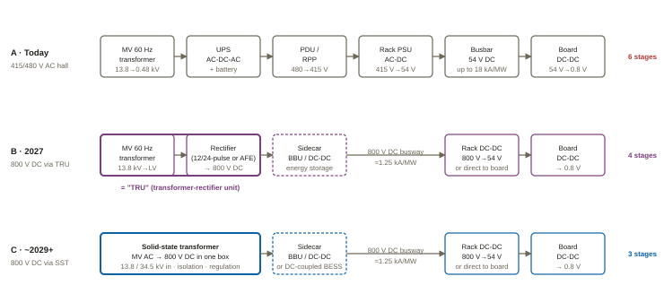
800 V DC and the solid-state transformer are two separate decisions. A customer can build an 800 V DC hall in 2027 with a transformer-rectifier unit and never buy an SST. The SST is a bet on a further consolidation of the upstream chain — a bet whose payoff depends on efficiency, footprint and controllability being worth the overload and cost penalties discussed in chapter 5.
A transformer changes voltage by coupling two windings through a magnetic core. The core must be big enough to carry the flux the primary voltage pushes into it every half-cycle; the governing relation is V ≈ 4.44 · f · N · B · A — voltage equals frequency times turns times flux density times core area. At 60 Hz, a multi-megawatt transformer needs tonnes of laminated steel because f is small. Raise f to 10 kHz and, for the same V, N and B, the core area shrinks by the ratio of the frequencies — roughly 170×. That single relation is the whole reason a solid-state transformer exists: if you can make the voltage alternate at kilohertz, the isolation transformer becomes a suitcase-sized nanocrystalline or ferrite block instead of a substation yard.[3,4]
Making the voltage alternate at kilohertz is what power electronics does. A solid-state transformer is therefore not one component but a converter system: rectify the medium-voltage AC into DC, chop that DC into a kilohertz square wave, pass it through the small transformer, and rectify it again on the low-voltage side. Three stages, each built from semiconductor switches, each controllable.[3]
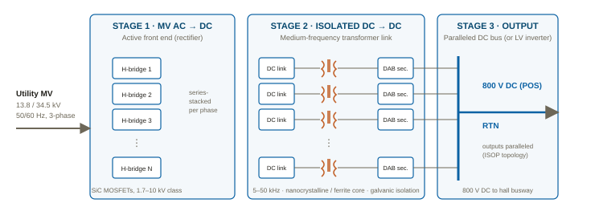
No commercially available silicon-carbide MOSFET blocks 13.8 kV. Production SiC devices are rated 1.2 kV, 1.7 kV and (from a small number of suppliers) 3.3 kV; 6.5 kV and 10 kV parts exist as engineering samples and research devices.[5,3] The industry's answer is the cascaded H-bridge: put N single-phase converter cells in series per phase, so the line-to-neutral peak voltage is shared among them. With a 1.7 kV device derated to roughly half its rating for the cell's DC link, a 13.8 kV design needs on the order of 14–15 cells per phase — 42–45 cells across three phases, each with its own DC-link capacitor, transformer and DC-DC stage. A 34.5 kV design needs about 2.5× as many. Moving to 3.3 kV devices roughly halves the count; the (still immature) 10 kV class would bring a 13.8 kV phase down to a handful of cells, which is why the research community pursues it.[3,6]
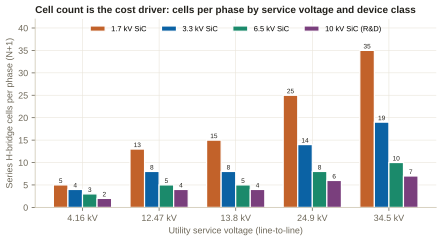
Each cell's DC link (typically 0.9–2 kV) feeds a dual active bridge: a full bridge on the primary chops the DC into a square wave at 5–50 kHz; the MFT couples it, at MV insulation on the primary side, to a secondary full bridge that rectifies it back to DC. Power flow is set by the phase shift between the two square waves, which makes the stage inherently bidirectional — power can go back to the grid, which a passive rectifier can never do. Resonant variants (CLLC, series-resonant) trade some control range for soft switching and lower loss.[3,4] The MFT is the component with the fewest suppliers: it needs a low-loss kilohertz core (nanocrystalline alloy or ferrite), medium-voltage insulation between windings that must withstand partial discharge over a 20-year life, and a cooling path for losses concentrated in a small volume. Dry-type and liquid-cooled MFTs both exist; the choice drives the enclosure design.[3]
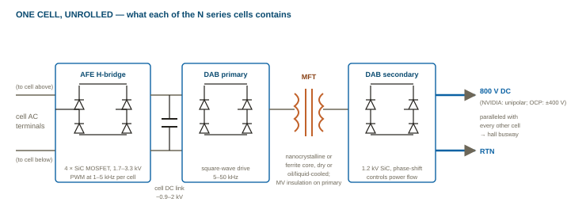
Because every cell's isolated secondary is tied in parallel, the output is a single low-impedance DC bus whose voltage the controller holds regardless of which cells are carrying load. This is the property that makes the SST attractive to a DC hall: the same converter that replaces the transformer also replaces the UPS's rectifier and the PDU's regulation, and it presents a bus to which batteries, capacitors and even on-site generation can be DC-coupled without another conversion. Whether the bus is single-ended 800 V (as NVIDIA specifies) or bipolar ±400 V (as the OCP standard allows) is decided at this stage by how the secondaries are stacked and where the reference is tied.[1,7]
A well-designed liquid-cooled 60 Hz distribution transformer is 99.0–99.5% efficient at rated load. An SST, having three switching stages, is intrinsically less efficient as a transformer: published and claimed figures for MV-to-DC SSTs cluster between 97% and 98.5%. The comparison that matters, however, is chain versus chain: an SST feeding 800 V DC replaces transformer plus UPS double-conversion plus PDU plus rack rectifier, and it is that stacked loss — typically 6–9% from utility to 54 V in a classic hall — against which NVIDIA's "up to 5%" improvement claim is made. The losses inside an SST split roughly between switching and conduction loss in the SiC devices (the majority), core and winding loss in the MFT, and auxiliary power for gate drives, controls and cooling; partial-load efficiency is generally better than a UPS's because unloaded cells can be switched off.[1,3,4]
NVIDIA's white paper names two direct-from-MV options and rates them identically on efficiency: the MV rectifier and the solid-state transformer, "as large as 7.5 MVA per unit with 98.5% or better efficiency."[1] The MV rectifier — trade shorthand calls it a transformer-rectifier unit, or TRU, though NVIDIA itself never uses that term[1] — is "a proven, high-capacity power conversion system widely used in industries like mining, electrolysis, rail, and grid-scale storage," built from "a step-down transformer, rectification modules, filters, and protection systems," whose "mature design offers high reliability and supply chain readiness"; "compared to the evolving SST, MV rectifiers provide a faster and proven path for quick 800 VDC deployment."[1] Zhonhen's "Panama" architecture is exactly this: medium-voltage switchgear, phase-shifting transformers and 800 V rectifier cabinets in one lineup, claiming 98.5% and more than 45% less copper than the AC hall — a multi-pulse rectifier behind a 60 Hz transformer, not an SST, and one of the three TRU families NVIDIA's August 2026 paper names by name.[8,9]
| Attribute | Transformer-rectifier unit (MV rectifier) | Solid-state transformer |
|---|---|---|
| Isolation and step-down | 60 Hz iron-core transformer (99%+ alone) | Medium-frequency transformer inside each cell (kHz) |
| AC-to-DC | Multi-pulse diode/thyristor rectifier, or active front end, on the LV side | Cascaded H-bridge active front end on the MV side |
| Efficiency (NVIDIA) | 98.5% or better | 98.5% or better |
| Overload / inrush margin | Inherits the transformer's thermal mass (200% for 30 min class) | Semiconductor limits: microsecond transients, ~1.0–1.2× continuous |
| Fault current | Transformer impedance limits it; conventional protection coordinates | Must be actively detected, limited and interrupted within device SOA |
| Controllability | Passive rectifier: none; AFE: partial | Full: power factor, ride-through, reactive support, current limiting, bidirectional |
| Footprint / mass | Transformer yard + rectifier room | Roughly one-third the weight and volume (ORNL) |
| Supply chain today | Mature; transformer lead times are the bottleneck | Custom MFTs, 3.3 kV+ SiC ramping, few gate-driver suppliers above 3.3 kV |
| NVIDIA slot | Options A and B (2026–2027) contain no MV conversion; Option C first block (TRU) from ~2028 | Option C next generation, 34.5 kV direct, blocks toward ~10 MW, "toward 2029" |
Sources: NVIDIA October 2025 white paper;[1] NVIDIA August 2026 execution paper;[9] ORNL review;[10] Wolfspeed.[4]
NVIDIA's second paper — 800 VDC Architecture: Industry Alignment & Execution (August 2026, 36 pages), which the Sales repo holds and has analysed in its Industry Guidance module — turns the October 2025 vision into three deployment options with dates, and a rack roadmap of 145 → 330 → 570 → ~1,000 kW across Gen 1–4.[9,11] Option A — Power Rack (production Q3 2026): a 19-inch power rack beside the compute racks takes twelve 100 A AC whips at 415–480 V, rectifies through air-cooled shelves of six 18.3 kW PSUs (each carrying 1,200 J for input-current shaping) and puts out about 660 kW of 800 V DC over interlocked 125 A DC whips, point-to-point with no busbar; optional 80 kW of BBU for 60 s; a 2:1 compute-to-power-rack ratio; certified under UL 62368-1 — explicitly "a bridge" that still needs 12–24 AC whips per power rack.[9] Option B — Power Center (deployment as soon as Q3 2027): end-of-row DC power centres adjustable to 2 MW, deployed at ~1.6 MW in four-to-make-three for a 4.8 MW effective cluster, distributing over overhead 800 V DC busway with 1,250 A feeders and 125 A tap cans (moulded-case or solid-state breakers), fitting under existing AC electrical rooms.[9] Option C — DC Power Block (data-hall level): ~4.8 MW blocks (drawn as 5 MVA) in which medium-voltage AC enters a step-down transformer, low-voltage rectification feeds a 6,000 A-class DC switchboard and parallel 1,250 A busways use the same tap-can interface as Option B; block redundancy is a 4+1 "catcher" through a DC static transfer switch — "DC needs no phase synchronization, so source transfer is simpler than AC"; blocks scale as 20 MW deployment units and ship as factory-tested outdoor containers.[9] Option C, next generation: 34.5 kV AC converted directly to 800 V DC in blocks scaling toward ~10 MW, whose named enabler is the mature SST, "expected to be launched toward 2029" — "beyond the deployment horizons of current 800 VDC architectures."[9]
The same paper settles the TRU-versus-SST question for the first-deployed block. The transformer-rectifier unit is credited with "mature transformer technologies," "strong fault isolation capability," "improved compatibility with existing 34.5 kV utility distribution" and being "highly practical for approximately 5 MW-class power block deployment"; it names three TRU families — IGBT rectifiers derived from UPS platforms, aggregated rack-level SiC power shelves behind front-end transformers, and "the Panama Architecture," a line-frequency phase-shifting transformer at the MV entry feeding centralised rectification, "relying more heavily on passive magnetic components, offering a simpler and highly familiar design philosophy." The SST, by contrast, is "actively evaluated as a potential future implementation path," is "~15 kV-class today" against the 34.5 kV that hyperscale campuses take, and is the enabler of the ~10 MW future block.[9] The repo's analysis draws the practical conclusion: NVIDIA has formally blessed the TRU path for the first power-block slot, the 2029 date attaches specifically to the next-generation SST and MV-direct conversion, and a Vertiv/Eaton/Delta-class TRU block competes sooner than the older "no Western MV-to-DC block until 2029" framing implied. The 4.8 MW block — its paralleling, its 1,250 A busway and tap-can interface, its participation in the 4+1 catcher — is the thing every vendor now has to answer for.[11] AC does not disappear in any option: it keeps powering storage, networking, cooling and management.[2] The Sales repo's competitive report frames the sequence as "TRU-now / SST-2029" and, as of its 8 September 2026 edition, records only one covered vendor whose filing describes an SST as supplying the market.[12]
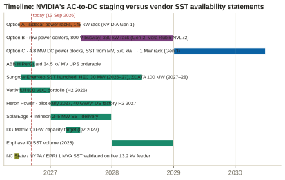
NVIDIA's headline numbers for the architecture — up to 5% better end-to-end efficiency, 45% less copper, 85% more power through the same conductor, 70% lower maintenance and 30% lower total cost of ownership — are claims for the 800 V DC architecture against a legacy AC hall whose end-to-end efficiency it puts at "less than 90%".[20,1] They are not claims for the SST against the MV rectifier, which NVIDIA rates at the same 98.5%. The SST's advantages in NVIDIA's own framing are stage elimination, footprint and control, not raw efficiency — a distinction to hold onto when a vendor quotes the 5% as an SST benefit.[1] Where the SST does show a distinctive efficiency property is at partial load: a real-time-simulator study of a 10 kV → 800 V SST against a UPS baseline found the SST at roughly 2% loss "with only minor fluctuations as the load varies" against 7–13% for the UPS chain with "stronger sensitivity to load level" — a consequence of switching idle cells off, tempered by the dual active bridge's tendency to lose soft switching at light load.[21,10]
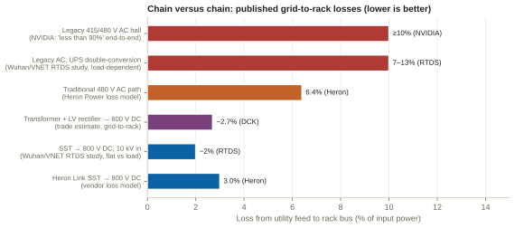
| Element | Reference-design value | Why it matters for an SST vendor |
|---|---|---|
| Conversion units | Five 3.5 MW MV rectifiers, 35 kV AC → 800 V DC, five-to-make-four | An SST must slot in at 3.5 MW-class with N+1 paralleling on a common bus |
| DC distribution board | Centralised 5,000 A | Fault energy on a common 800 V bus is set by every connected capacitor |
| Feeders | 1,500 A busduct or liquid-cooled cable, each with load-break contactor, solid-state circuit breaker and blocking diode | Protection is per-feeder and semiconductor-based; the SST's own fault behaviour must coordinate with it |
| Loads | Four 1.1 MW compute racks on 1+1 feeds from independent rectifiers; one rectifier sustains 3.3 MW | A single SST failure must not drop a rack — redundancy is designed above the unit, not only inside it |
| Energy storage | Capacitors for dynamics as fast as 400 µs; batteries beyond seconds; GPU loads swing 30%→100% | DC-coupled storage is a native fit for an SST's DC bus; the SST need not provide the fast reserve |
| Grid behaviour | Grid-forming and fast-response controls via Ethernet; ride-through referencing ERCOT VRT requirements | This is where a converter beats iron — see chapter 5.5 |
Source: NVIDIA white paper, pp. 15–17.[1]
Oak Ridge National Laboratory's 2026 review of medium-voltage SSTs for data centers is the most complete open treatment of the subject, and its conclusion is blunt: "protection and standardization remain the two most significant challenges," and "the reliability of SSTs must be improved before they can completely replace conventional LFTs" — reliability being "a first-order consideration rather than a secondary objective."[10] The sections below take the limitations in the order a customer's engineer will raise them.
A liquid-filled 60 Hz transformer tolerates 200% load for 30 minutes (given light loading before and after) because tonnes of oil and iron take time to heat; a data hall exploits that margin every time a row of racks steps from idle to full load, a chiller starts, or a fault draws current until a breaker clears. An SST's silicon has microseconds of thermal margin, so surge tolerance collapses to transient events and continuous rating sits near 1.0–1.2× nameplate; no first-party SST vendor publishes an overload curve.[10,24] The practical consequence is that an SST is sized for peak rather than average, and that energy storage on the DC bus — which NVIDIA already requires for GPU load swings — becomes part of the overload strategy rather than an option.[1]
ORNL: MV-SSTs "exhibit limited fault withstand capability … unlike conventional transformers, which benefit from substantial thermal and magnetic fault tolerance, MV-SSTs must actively detect, limit, and interrupt fault currents within timescales compatible with semiconductor safe-operating limits."[10] On the DC side the problem is capacitor energy. Siemens' technical paper on protecting DC-powered data centers quantifies it: DC-link capacitors "will quickly release stored energy" into a fault, so "fault current is greatly increased"; on a common 800 V bus a fault in one load drew discharge from all three healthy loads' capacitors, fused clearing took ~20 ms, and "capacitor discharge interruption with 200 A/µs current rise rate was only possible with solid-state circuit breakers; other devices were not able to react fast enough."[25] DC has no natural current zero, so conventional breakers and fuses are "ineffective" without a current-limiting stage.[10] Every serious 800 V design therefore carries semiconductor breakers per feeder (NVIDIA's blocking diode plus SSCB per busduct; Heron's per-rack SSCB limiting fault current below 2 kA and clearing in under 5 µs), at the cost of conduction loss in the on state and a standards regime that is still catching up (UL 489i in North America; IEC 60947-10 published early 2026).[1,22,25,26] Grounding is a second-order choice with first-order consequences: a solidly grounded return lets a single positive-pole device clear a fault but demands fast handling of the first ground fault, while a floating or high-resistance system tolerates the first fault but must open both conductors.[25]
The medium-frequency transformer must hold medium-voltage insulation in a small volume while being driven by pulse-width-modulated square waves with very fast edges. TDK's assessment is that the MV high-frequency transformer is "the biggest challenge", needing "three times the insulation" — a 35 kV interface requiring roughly 100 kV of insulation; NC State's programme targets 50 kV BIL as the requirement and reaches 100 kV BIL with a wireless-power-derived winding at >99.5% transformer efficiency at 40 kHz.[24,6] ORNL identifies two distinct stresses: insulation coordination under a framework (IEEE C62.82.1) written for iron, where "localized insulation overstress may occur even when terminal-level clamping appears adequate" and impulse tests "may not accurately reflect internal stress"; and converter-induced stress, where fast dv/dt makes voltage sharing "dominated by parasitic capacitances" and drives partial discharge that shortens insulation life — mitigated by electrostatic shielding, graded insulation and semiconductive screening.[10,27] Gate drives above 3.3 kV isolation are "few and far between"; NC State names power-over-fibre gate drive with >20 kV isolation as an open need.[4,6]
A 4 MW SST contains on the order of a hundred or more SiC modules plus their capacitors, drivers and sensors; a 20-year life at 99.9–99.999% availability is the requirement Hitachi Energy and the operators cite.[24] The modular cascaded design gives "inherent redundancy and improved fault containment" and vendors design for it — Heron tolerates two cell failures per phase with sub-cycle bypass, NVIDIA specifies five-to-make-four at the unit level[10,22,1] — but ORNL flags a problem specific to wide-bandgap devices: series-stacked designs need a failed die to fail short and keep conducting for months, which press-pack silicon achieves and which SiC's thermal stability, small die area and short short-circuit withstand make "an open research challenge."[10] Wolfspeed's counter-evidence is device-level — no bipolar degradation over 1,000 h and cosmic-ray failure rates four times better than requirement at 6 kV DC — which is necessary but not sufficient at system level.[4]
Cost. Trade reporting prices SSTs at roughly twice a conventional transformer; the vendor rebuttal is system-level — Heron's model puts MV-to-rack at $0.42M per MW against $1.77M for the traditional lineup, with labour at $0.08M against $0.73M per MW, by deleting switchgear, PDU, UPS and the electrical room.[23,22] Neither figure has been audited on a delivered US project.
Standards. NEC Article 706's default treatment of DC systems is the single biggest code-compliance gap for 800 V distribution, with the 2026 edition expected to address it; SSTs are today listed through UL 1741 (inverters) and UL 1973 (energy storage), "neither [of which] fully addresses 800 VDC distribution"; DC arc-flash has no standardised clearing curves or PPE categories, so engineers extrapolate AC models that "may underestimate real hazard levels" — Schneider's White Paper 219 exists precisely to fill that hole.[26,29] NVIDIA's mitigation is mechanical: touch-safe connectors and load-interlocked disconnects borrowed from consumer EV charging.[1] Chapter 6 takes up the US-specific code path.
Track record. EPRI's December 2025 survey found SSTs "largely in pilot or prototype stages," cataloguing a 25 kVA distribution unit, a 400 kW EV charger and a 500 kVA hybrid — sub-megawatt.[30] The first independently validated megawatt-class SST on a live US feeder came in June 2026: a 1 MVA, 13.2 kV unit from NC State, the New York Power Authority and EPRI, using 15 kV SiC MOSFETs, run over three days supplying an EV load, injecting reactive power and energised more than ten times.[6,31] Against that, vendors quote 3–7.5 MVA products; the gap between the largest validated unit and the smallest product claim is the risk a buyer is being asked to carry.
| Limitation | Where it stands (Sep 2026) | Vendor answer |
|---|---|---|
| Overload / inrush | ~1.0–1.2× continuous; no published curves | DC-bus energy storage; oversizing; N+1 paralleling |
| DC fault energy | Capacitor discharge at 200 A/µs; fuses too slow | Per-feeder SSCB + blocking diode; per-rack SSCB (<2 kA, <5 µs) |
| MV insulation / PD | ~100 kV insulation for a 35 kV interface; no converter-specific coordination framework | Shielded, graded, screened MFTs; vacuum insulation (Sungrow); 100 kV BIL windings (NC State) |
| SiC failure mode | Short-circuit failure mode for WBG "open research challenge" | Cell bypass and redundancy; press-pack alternatives |
| Cost | ~2× LFT at the unit; system claims unaudited | Delete switchgear/PDU/UPS/room; faster energisation |
| Codes / listings | NEC 706 gap; UL 1741/1973 workaround; DC arc-flash unstandardised | NEC 2026; UL 489i SSCBs; IEC 60947-10; vendor white papers |
| Field record | Largest validated unit 1 MVA (Jun 2026) | 3–7.5 MVA products announced; pilots 2026–2027 |
Sources: ORNL;[10] Siemens;[25] Heron;[22] NC State;[6] EPRI;[30] mgrid.org on NEC 706;[26] Data Center Knowledge;[23] Power Electronics News.[24]
Every binding constraint on US AI data-center power sits upstream or sideways of the conversion stage. An SST changes how conversion is done; it does not create megawatts, shorten an interconnection queue, or ship a transformer sooner. Its genuine leverage in the United States is narrow but real, and it is regulatory: it is the one conversion topology that turns a site's grid interface into a controllable, modelable device at the moment NERC and FERC are making load controllability mandatory. This chapter takes the constraints in order of how hard they bind.
Lawrence Berkeley National Laboratory's December 2024 report put US data-center consumption at 176 TWh in 2023 (4.4% of national electricity, up from 58 TWh in 2014) and projected 325–580 TWh — 6.7% to 12% — by 2028.[32] Grid Strategies' five-year summer-peak growth forecast has risen from 24 GW (2022 vintage) to 38, 64 and, in November 2025, 166 GW, of which data centers are roughly 55%, about 90 GW — a figure the same report believes utilities overstate by ~25 GW; only 888 miles of 345 kV-and-above transmission were built in the prior year against a benchmark near 5,000, and six regions account for more than 80% of the growth.[33] ERCOT's large-load queue tells the story most starkly: roughly 410 GW queued as of March 2026 (about 87% data centers), up from 63 GW at end-2024, against 9.0 GW with approval to energise and an observed large-load peak of 3.9 GW; ERCOT is moving to batch studies every six months because serial restudies were "extending timelines by years."[34] None of these are conversion-stage constraints, and the DOE's Speed to Power initiative (September 2025, up to 20 GW of incremental load through transmission, reconductoring and generation) addresses none of them with power electronics.[35]
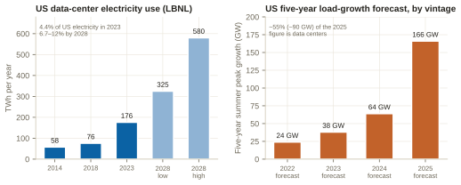
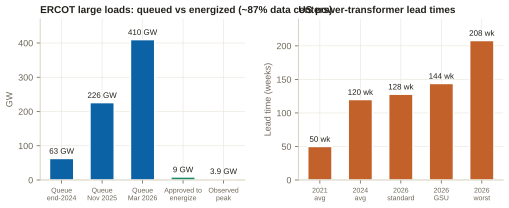
US utilities serve large customers at 12.47, 13.2 or 13.8 kV (the ANSI C84.1 15 kV class), 24.9 kV, or 34.5 kV; gigawatt campuses interconnect at 69–345 kV with their own substations. Large greenfield campuses in Texas and the Southeast trend to 34.5 kV because it moves more power on fewer, smaller feeders; Northern Virginia campuses run 34.5 kV distribution behind 230 kV ties — the July 2024 event was on a 230 kV line serving a data-center cluster.[38,39] Because a cascaded-H-bridge SST's cell count scales roughly linearly with input voltage, the 13.8 → 34.5 kV step multiplies cells, MFTs, gate drivers and control channels by ~2.5× (Figure 5). A 13.8 kV SST is therefore a different product from a 34.5 kV SST — and the US site mix needs both, which is why the first commercial units (Sungrow at 10–13.8 kV; Heron at 34.5 kV) target one class each.[14,22]
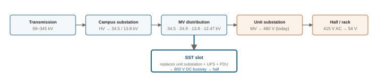
Power-transformer lead times went from about 50 weeks in 2021 to about 120 in 2024, with large units at 80–210 weeks; prices rose 60–80% from January 2020, grain-oriented electrical steel doubled, copper rose ~50%, and only ~20% of US demand is met domestically.[36] In 2026 standard units run ~128 weeks and generator step-ups ~144, with Wood Mackenzie projecting a 15% shortage of power transformers this year.[37] Policy is pulling both ways: DOE's April 2024 distribution-transformer efficiency rule (compliance April 2029) keeps ~75% of core steel as GOES rather than forcing amorphous, and is being reconsidered;[40] a Section 232 tariff of 50% on semi-finished copper and copper-intensive derivatives took effect 1 August 2025 — copper windings being the second-largest bill-of-materials line in both an LFT and an SST;[41] Cleveland-Cliffs' Butler Works is the sole US GOES producer.[42] Domestic capacity is coming, but late: Hitachi Energy broke ground in June 2026 on a $457M large-power-transformer plant in South Boston, Virginia, part of more than $1B of US investment;[43] Siemens Energy's Charlotte plant is ramping from 24 toward 57 large units a year from early 2026.[44]
Partially. It removes the 480 V AC layer — LV switchboards, LV transformers and their copper — and NVIDIA's MV-direct units eliminate "the need for traditional low-voltage (480 VAC) layers."[1] But it does not remove the utility service transformer where the utility owns it, nor the MV switchgear, cable or substation, and it trades GOES-cored 60 Hz iron for medium-frequency transformers on nanocrystalline or ferrite cores plus hundreds of SiC modules per unit — a supply base at a fraction of the transformer industry's scale, with 3.3 kV SiC only reaching volume in late 2026.[10,5] There is no public evidence that SST supply scales faster than the 2027–2030 transformer capacity now under construction.
At about 7 p.m. on 10 July 2024 a lightning arrester failed on a 230 kV line in Virginia. Three-shot automatic reclosing, staggered at the two line ends, produced six successive faults in 82 seconds (42–66 ms each, voltage 0.25–0.40 p.u. in the affected area). About 1,500 MW of load — exclusively data centers — dropped, none of it disconnected by utility equipment: all of it left the grid on customer-side protection, and roughly 1,260 MW went at the third depression and did not return for hours, because a common scheme counts voltage disturbances (typically three within a minute), transfers to backup and stays there until manually reconnected. Frequency rose to 60.047 Hz and voltage to 1.07 p.u.[39] It was not a one-off: NERC's January 2026 review found 26 ERCOT events between January 2023 and September 2025 in which large electronic loads shed more than 100 MW each, 17–95% of their consumption; in one case cooling-plant variable-frequency drives were set to trip at 0.96 p.u., so a normally cleared 50 ms fault shut a whole facility.[45]
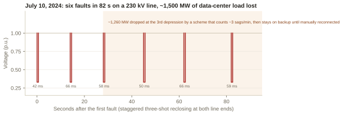
The regulatory response is the fastest-moving part of the whole picture. NERC's Large Loads Task Force (August 2024) has produced a gaps assessment (March 2026) that states plainly "there are currently no specific voltage ride-through Reliability Standards for large loads" — the ITIC curve may not apply behind a UPS, IEEE 1668 covers equipment below 1,000 V only, and PRC-024/029 and IEEE 2800 apply to generators;[46] a Reliability Guideline (May 2026, more than 800 comments) directing planners to set power-factor and reactive-control ranges, MW/min ramp limits and LVRT/HVRT curves in interconnection agreements before first energisation;[47] and a Level 3 Essential Action Alert (4 May 2026) with seven essential actions and a proposed "Computational Load Entity" registration at ≥20 MW connected at 60 kV with >1 MW of IT load, whose Essential Action 1 demands the exact model an SST can supply (seasonal MW and power-factor ranges, UPS dynamics, IT-versus-cooling composition, ramp rates, protective-device reconnection settings) and whose Essential Action 5 requires no non-consequential loss of firm computational load for normally cleared faults.[48] On 16 July 2026 FERC ordered NERC to file new reliability standards and registry criteria by 31 December 2026 (Docket RD26-7-000); Project 2026-02 proposes CLO-001/002/003 for interconnection modelling, operational data and protection coordination, with comments open until 18 September 2026.[49,50]
| What NERC/FERC now ask of a large load | LFT + UPS hall | SST front end |
|---|---|---|
| Programmable LVRT/HVRT envelope | Emergent from whichever UPS vendor won the bid | Firmware-defined; NVIDIA asks for ride-through beyond ITIC referencing ERCOT VRT[1] |
| Power-factor range and dynamic reactive control at the POI | Needs capacitor banks or a STATCOM | Four-quadrant active front end supplies it natively |
| MW/min ramp limits on pickup and recovery | Sequenced breakers, manual retransfer | Setpoint-driven, enforceable in software |
| One authoritative dynamic model of the grid interface | Composite of transformer, UPS, VFDs, protection | The converter is the model |
| IEEE 519 harmonics at the PCC | Rectifier harmonics filtered downstream | Sinusoidal current by construction |
| Fault-current contribution and system strength at low SCR | Iron passes prospective fault current for coordination | Converter limits current; NERC flags converter-driven stability |
| Thermal overload margin | Minutes to hours | Milliseconds — the SST's own ride-through is the new single point of failure |
Two cautions keep this honest. The July 2024 root cause was not the transformer but a disturbance-counting scheme and manual retransfer — an SST does not override downstream customer logic — and cooling plant is usually not behind the critical bus, so an SST feeding IT load alone leaves the mechanical plant exposed, which is exactly why NERC now asks for IT-versus-non-IT composition.[39,45,48]
800 V DC is not medium voltage under the NEC. The medium-voltage threshold is over 1,000 V AC / 1,500 V DC, so 800 V DC sits under ordinary Chapter 2 low-voltage rules; NEC 2023 consolidated MV rules into Article 235 and NEC 2026 redistributed them into Articles 265–270 and 315.[51] Where 800 V costs something is working space: for 601–1,000 V to ground, NEC 110.26 requires 3/4/5 ft of clearance by condition against 3/3.5/4 ft below 600 V — a foot of extra aisle depth across a hall.[51] NVIDIA's own reading is that 1,500 V DC is a legitimate low-voltage limit under Article 690 and IEC 62477-1 but that "few certified components exist at this voltage level" indoors, hence 800 V on 1,000 V-class components.[1]
The DC arc-flash hole is the sharpest single gap. No consensus standard provides a validated method for DC arc-flash incident energy — IEEE 1584-2018 is AC only — while NEC 110.16 labelling applies to AC and DC alike. The NFPA Fire Protection Research Foundation's project to develop a DC arc-flash model has Phase 1 "focused on 800 Vdc" data-center applications, is sponsored by NFPA, Siemens, Schneider Electric, Eaton, ABB and Mersen, is budgeted at $3–4 million, and "would span around three years."[52] Read against NVIDIA's 2027 Kyber ship date, US operators will energise 800 V DC busway for two to three years with no validated way to compute incident energy — conservative table-based PPE, de-energised-work rules and per-project AHJ negotiation in the meantime. Schneider's White Paper 219 is the interim engineering reference.[29]
UL listing coverage stops at the AC/DC boundary the standards were written for: UL 891 switchboards to 1,000 V, UL 489/1066 breakers to 1,000 V AC / 1,500 V DC, UL 857 busway — and vendor "800 V" claims frequently conflate 800 V AC with 800 V DC. UL, CSA and IEC are at unharmonised stages on 800 V DC; IEC 60947-10 for solid-state circuit breakers published in early 2026; no UL Solutions announcement of a dedicated 800 V DC data-center standard could be located.[19,52] NFPA 855-2026 requires a hazard-mitigation analysis for nearly all lithium systems above 20 kWh and two-hour fire separation for an ESS room in an occupied building — in tension with NVIDIA's rack- or row-local DC-bus storage.[53,1] And MV inside the hall — an SST terminating 34.5 kV at the row — turns white space into MV-classified space with vault, access, ventilation and qualified-person rules; no US authority-having-jurisdiction precedent for MV switching equipment inside an operating data hall was located, which is probably the largest permitting unknown for facility-level SSTs.[51]
At 12.47–34.5 kV the service transformer is commonly utility-owned; an SST displacing it must be accepted onto a utility's approved-equipment list — a multi-year qualification with no visible US precedent — which is why every announced US SST pilot sits behind a customer-owned MV substation.[38] Interconnection terms are being written now: IEEE 519-2022 applies at the point of common coupling with limits that tighten at higher voltage and lower short-circuit ratio, and US utilities do not allocate per-customer harmonic limits;[46] 24 states have approved large-load tariffs with minimum-billing, exit-fee and financial-assurance terms;[54] Texas SB 6 (2025) requires loads of 75 MW and above interconnected after 31 December 2025 to install equipment letting ERCOT curtail them directly in emergencies — a mild tailwind for a converter that can curtail partially and gracefully rather than by breaker trip;[55] PJM's 2027/28 capacity auction cleared at the $333.44/MW-day cap for a second consecutive year;[56] and FERC's December 2025 co-location order (Docket EL25-49) forced PJM to create firm and non-firm contract-demand services for generation-co-located load, with further compliance filings through May 2026.[57] Behind-the-meter generation is where the SST's DC-bus argument is strongest — NVIDIA's reference block is a DC microgrid — but on-site generation above ~10% of annual demand brings IEEE 1547/2800 obligations; a DC microgrid changes which standard applies, it does not escape interconnection.[46,1]
AEP names equipment, not permitting, as the binding constraint on its 765 kV programme — "the supply of extra-high-voltage transformers and circuit breakers" — and has 69 GW contracted against ~190 GW of inquiries; its Ohio tariff (12-year term, 85% minimum billing, ~3-year exit fee) collapsed a 30 GW pipeline to 5.6 GW signed.[58] Dominion holds ~53.8 GW under contract against a 24.7 GW peak, with ~70 GW of pending requests and a working rule that a load under 50 MW rides existing distribution in 1–2 years while anything larger "will most likely require the extension of transmission lines and the construction of a new substation."[58] Oncor's Q1 2026 queue was ~271 GW of data centers across 697 requests, and Texas's Batch Zero large-load process was paused in August 2026 pending an audit.[58] ERCOT's NOGRR 282 requires new electronic loads of 75 MW and above to ride through disturbances, "effectively mandating buffering — UPS, BESS or on-site generation — between grid and GPUs," which is the rule that created the medium-voltage UPS category ABB and ON.energy now sell into.[58,59] And the repo's grid-equipment analysis sizes the announced domestic transformer fix honestly: against US demand of ~900 large units a year by 2027, one flagship plant at 57 units is about 6% of national demand, arriving in 2027.[58]
No public, apples-to-apples $/MW comparison of SST against LFT-plus-rectifier for a US data center exists; the fragments are SiC falling from more than $10/A in 2018 to $2–3/A in 2025, Infineon's estimate that SSTs take ~$1B of a $15B small-transformer market by 2030, and SemiAnalysis's sizing of ~39 GW on 800 V DC by 2030 with an ~$11B power-sidecar market peaking in 2028 before facility-level 800 V displaces it and an ~$13B SST market by 2030.[60,24] The installed base is 415/480 V AC sized for racks an order of magnitude smaller than Kyber; the brownfield bridge is the sidecar, which "layers on top of existing white space infrastructure rather than replacing it," so greenfield AI campuses capture the structural benefit and retrofit-heavy enterprise and colocation halls do not — and the average operating US site is 30–60 MW.[60,33] Workforce compounds all of it: electrical work is 45–70% of data-center construction cost, electrician demand is running ~80,000 openings a year, MV-DC skills are not in the standard apprenticeship, and there is no validated 800 V DC arc-flash method for the qualified-person training to rest on.[61,62,52]
| # | Constraint | Binding through | Does an SST relieve it? |
|---|---|---|---|
| 1 | Interconnection queue and transmission build (888 mi/yr of 345 kV+ built vs ~5,000 needed; ERCOT 410 GW queued, 9 GW approved) | 2030+ | No |
| 2 | MV/HV transformer lead times (128–210+ weeks; OEM capacity committed to 2029–2030) | 2029–2030 | Partially — removes the LV layer; inherits SiC and nanocrystalline scarcity |
| 3 | No validated DC arc-flash model (NFPA FPRF three-year project begun 2026) | ~2029 | No — it is the SST's own gating item |
| 4 | Ride-through and NERC standards (CLO-001/002/003 due 31 Dec 2026; Level 3 alert) | 2027 onward | Yes — the strongest genuine case |
| 5 | UL listings for 800 V DC busway, breakers, connectors; NEC silence on DC data-center specifics | 2027–2029 | No |
| 6 | Retrofit base at 415/480 V AC; 30–60 MW average site | Indefinite | No — greenfield only |
| 7 | Workforce and MV-DC qualified persons | 2028+ | No — worsens it |
SSTs are marketed against constraint 2 while the market's binding constraints are 1 and 3. The defensible argument is constraint 4: an SST is the only architecture that makes a gigawatt-class load a modelable, dispatchable, ride-through-compliant grid citizen at the exact moment FERC and NERC make that mandatory. Everything else in the story is either years out or belongs to the transformer-rectifier unit, which NVIDIA itself calls "the faster and proven path."[1,48]
The Sales repo's Profiler corpus and NVIDIA's own published rosters agree on the frame: the 800 V DC transition is four contests, not one. NVIDIA has published three partner rosters — May 2025 (silicon; Delta, Flex, Lead Wealth, LITEON, Megmeet for components; only Eaton, Schneider Electric and Vertiv for data-center power systems), October 2025 at the OCP Summit (fourteen silicon vendors; Bizlink, Delta, Flex, Lead Wealth, LITEON, Megmeet; and a facility tier of ABB, Eaton, GE Vernova, Heron Power, Hitachi Energy, Mitsubishi Electric, Schneider Electric, Siemens and Vertiv), and in August 2026 a specification pivot that names no vendors at all, citing instead the OCP LVDC Solid-State Transformer Specification v0.3 and "more than 80" implementers.[63,64,65] Roster membership is therefore a weaker signal than it was a year ago; the scarce asset has shifted to the first certified, orderable product built to the spec. The Sales repo's 8 September 2026 competitive report adds the discipline this chapter follows: "architectural validation is not commercial inclusion, and this is the cycle in which the difference became measurable."[12]
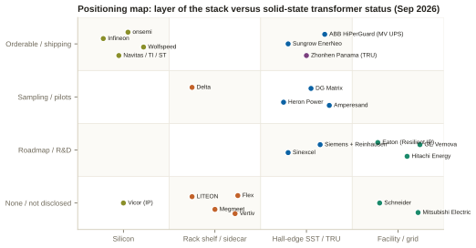
Infineon is on both NVIDIA rosters as one of fourteen silicon providers — "a good place to be and not a chokepoint," in the repo's words — with a dedicated SST application page, the 1,200 V CoolSiC class the 800 V bus needs once overshoot and derating are counted, 2.3 kV and 3.3 kV parts arriving through 2026, an 800/±400 V → 50 V GaN bus-converter reference above 98%, and a March 2026 SiC supply partnership with DG Matrix. Its AI data-center power revenue tripled to above €700M in FY2025 and is guided above €1.6bn for FY2026 and ~€2.5bn for FY2027; capex was raised to €2.7bn explicitly for AI data-center capacity. Its own SST-versus-conventional comparison — 40× lighter, 14× smaller, 50% faster to build — is the most quotable in the industry, and its market sizing is the most sober: SSTs take a "small-power slice above $1bn in 2030" of a conventional transformer market above $15bn.[28,66,67,5] onsemi, Navitas, Texas Instruments, STMicroelectronics and ROHM are all on both rosters with 800 V → 12/6 V products at 96.5–97.6% announced around GTC 2026; onsemi's release is the one that explicitly names "solid state transformers" in its portfolio.[68,69,70,71] Wolfspeed is on no roster but publishes the clearest SST thesis (1,200 V SiC for the 800 V bus, 25–40% conversion-loss reduction, MV transformer lead times "up to 3 years" putting ~20% of planned projects at risk) and ships the 2.3 kV and 10 kV devices the topology needs.[4]
Vicor is the demonstration that leverage in this layer is not proportional to scale. It appears on no NVIDIA roster and sells neither shelf nor block, yet its bus-converter patents produced a February 2025 ITC limited exclusion order (Inv. 337-TA-1370) with cease-and-desist orders against Delta Electronics (Americas), Quanta, FII USA and Ingrasys; by October 2025 licensing settlements with OEMs and hyperscalers were worth "nearly $300 million in expected contribution" and royalties reached a fifth of the June 2026 quarter ($30.4M of $143.4M); a second ITC case (337-TA-1484) against fifteen respondents including Delta, MPS, Luxshare, Wistron, Wiwynn and Quanta targets a September 2027 decision. The repo's verdict: "any 800 VDC shelf model needs a royalty line."[72,73,74,12] Vicor's own arithmetic is also the crispest statement of the copper case: a 140 kW rack draws 350 A at 400 V and 175 A at 800 V, and 500 MCM cable for 400 V costs about $14/ft against $5/ft for 3/0 AWG at 800 V.[74]
This is the one layer where NVIDIA's roster is the peer family, and where money moves first: Options A and B contain no medium-voltage conversion at all.[12,9]
Delta Electronics is the benchmark. It is #1 in NVIDIA AI-server power (WAWT), holds a brokerage-estimated ~60–70% of Blackwell PSUs, and publishes the deepest catalogue: the 800 V DC in-row 660 kW power rack (six 110 kW shelves each embedding an 80 kW BBU — 480 kW per rack), 18.5 kW AC/DC PSUs at up to 98%, 1RU 90 kW 800→50 V shelves at 98.5%, an SiC e-fuse clearing in under 3 µs, a liquid-cooled 8,000 A 50 V busbar and a 2.4 MW 800 V-native CDU. It is also the only company credibly in two layers: a solid-state transformer taking 6.6–35 kV AC to 800 V DC at up to 98.5%, shown at OCP 2025 and GTC 2026 alongside an SST-plus-SOFC microgrid, with "dozens of units in Asia" and US pilots reported, and a standing SST product category on its site. Its stated ramp is ±400 V mass production from Q3 2026, 800 V small volume Q4 2026 and the true ramp in 2027, with SST commercialisation riding the same wave; TrendForce names it the primary beneficiary with first volume shipments in 3Q26. Q2 2026 revenue was NT$183bn (+48%), net profit NT$25bn (+80%), and AI data-center power and cooling crossed half of company revenue for the first time; FY2026 capex is NT$70bn (+50%). The overhang is Vicor: Delta's Americas arm is under the ITC cease-and-desist.[75,76,77,78,79,72]
LITEON is the leading second source and owns the BBU franchise: 33 kW and 110 kW shelves for Vera Rubin NVL72, an 800 V DC 660 kW power rack scaling to >1.5 MW racks in 2H 2026, a 22 kW 800 V supercapacitor shelf, BBU shipments ~30× in 2025, and a GB300 collaboration that cut grid peak load ~30%. Mass production on the 800 V line is Q1 2027 after a 13-week qualification from August 2026 sampling. Q2 2026 was a record — NT$52.7bn (+30%), cloud and AIoT 55% of sales (+70%), EPS +126% — and it has committed ~US$919M to two factories in McKinney, Texas, targeting 70% of capacity outside China by 2027; the repo's caution is that "US capacity is announced, not producing." It has no SST and no MV product.[80,81,82,83]
Megmeet is the mainland exception: the only Chinese vendor NVIDIA named for GB200 NVL72 power, on both rosters, with the 800 V HVDC sidecar for Kyber (>1 MW per rack), a 110 kW liquid-cooled shelf, a 570 kW side rack combining BBU and PCS functions, and a stated full chain that runs "AC compensator → BESS/backup shelves → SST (>98.5%, 800 V DC out) → 1 MW+ sidecar → shelves → point of load" — with the SST explicitly "still in development" and a Dallas lab expanding to 1.5 MW. Its H1 2026 interim (238 pages) describes the company as "one of NVIDIA's designated recommended data-center power suppliers" — membership of a set, not a rank — names no competitor and discloses no AIDC revenue at any granularity; power products grew 60.9% to RMB 1.84bn at an expanding 25.1% margin, while headline profit of +45% masks an ex-non-recurring decline of 16% and an 85% fall in operating cash flow. The trade report that it displaced LITEON as the #2 NVIDIA shelf source has no supporting source and should be treated as contested.[84,85,86,12]
Flex launched an 800 V DC power rack for Vera Rubin in March 2026 (eight 110 kW shelves plus 24 RU for capacitive storage and BBU; 97.5% peak shelf efficiency at half load) and is buying EPC Power for $4.4bn — rectifiers, DC-DC, "planned solid-state transformers" and grid-forming technology, ~$800M of 2026 revenue at ~30% expected EBITDA margins — ahead of separating its Cloud and Power Infrastructure business in Q1 2027. Its Cloud and Power Infrastructure segment did $2.2bn in the June 2026 quarter (+35%); it discloses no data-center revenue figure.[87,88] Vertiv sits in this layer by product (PowerDirect Rack; the PowerDirect 5000 sidecar at 400–900 kW) even though NVIDIA lists it as a founding facility partner: its 800 V platform — centralised rectifiers, DC busway, rack DC-DC, DC-compatible backup — reached "engineering readiness" in October 2025 and releases in 2H 2026 for a 2027 ramp; its own release contains no MV or SST reference. Commercially it is the demand-capture leader: Q2 2026 backlog $15bn (+109%), book-to-bill 2.9×, FY2026 guidance raised to $14bn on 31% organic growth. The repo's read is that it is the incumbent most architecturally exposed if conversion moves upstream — SemiAnalysis projects the architecture contracts the centralised UPS market while creating ~$11bn power-rack and ~$13bn SST markets — and that "no incumbent has yet named a shipping 800 VDC switchboard product."[15,89,90,60]
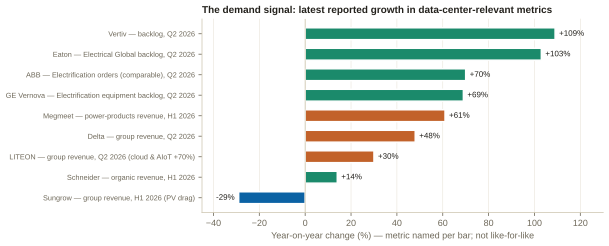
Every vendor in this layer publishes a credible device; as of September 2026 only one states in a filing that it is supplying the market.[12]
Sungrow (EnerNeo) — the world's #1 PV-inverter maker — launched the EnerNeo SST in Hefei on 9 July 2026: 10–13.8 kV AC in, 800 V DC out, 3 MW standard, 1.5 MW minimum block configurable to 4.5 MW, 98.5% system efficiency, 312 kW/m², one-third to one-fifth the footprint of a conventional lineup, a 99.999% availability claim, "medium/low-voltage partitioning, intelligent module rotation-rest and integrated vacuum insulation." Its H1 2026 interim describes EnerNeo as "officially launched and supplying the market," with framework purchase agreements with HEC Technology (30 MW, 2026–27) and ZDATA (100 MW, demo end-2026, deliveries 2027–28) and small-batch domestic delivery of the 800 V HVDC kit; the roadmap it gives is 2026 field trials, batch orders from 2027, scale from 2028. Two things temper it: group revenue fell 29% in H1 2026 on the PV downturn, and when investors asked in August 2026 whether EnerNeo had been sampled to North American hyperscalers or was progressing through UL, Sungrow left both questions unanswered. It is on no NVIDIA roster. The repo's judgment: "a real architectural position and not yet a commercial one" — but it is the vendor that retired the "SST roster still forming" framing.[96,14,95,12]
Heron Power (Drew Baglino, ex-Tesla; legally Heron Power Electronics Company, Scotts Valley, California) holds the most valuable positional asset in the layer and the largest execution gap. Heron Link is the most completely specified SST in the public record: 34.5 kV AC → 800 V DC, 4.2 MW per unit, >98.5%, thirty 140 kW cells with ten per phase, integrated MV protection and disconnect (UL-listed current-limiting fuses rated 40 kA at 34.5 kV), a 40-channel DC distribution panel with per-channel overcurrent protection, tolerance of two cell failures per phase with sub-cycle bypass, a per-rack solid-state breaker limiting fault current below 2 kA and clearing in under 5 µs, a battery coupled straight to the 800 V bus for 30 s of full-load backup, grid-forming operation with under 1% ripple at MV and IEEE 2800 / ERCOT NOGRR 282 ride-through, outdoor NEMA 3R siting that removes the electrical room, a 24-week lead time against 46–48, and a 12 MW block (four Links, four-to-make-three, 40 racks at 270 kW) modelled at $0.42M/MW MV-to-rack against $1.77M/MW and 3.0% losses against 6.4%.[22,134] The "5 MW" in the company's August and September 2026 releases is not a contradiction of the 4.2 MW: it is the same platform rated as a DC-to-MV inverter for solar and storage (98.6%, no derating to 50 °C), the configuration listed first on the company's site and — per the CEO — about two-thirds of current business; the 800 V DC data-centre configuration is rated 4.2 MW at 45 °C, and 10,000 units × 4.2 MW is the arithmetic behind "over 40 GW."[134,135,16,138] It is the only startup on NVIDIA's facility-tier roster. It has raised about $183M of equity — $43M through a $38M Series A (May 2025, Capricorn; with Breakthrough Energy, JB Straubel, Zach Kirkhorn) and a $140M Series B (February 2026, co-led by a16z American Dynamism and Breakthrough Energy Ventures) — plus a $60M credit facility from J.P. Morgan and TriplePoint Capital (10 September 2026), when Kirkhorn joined the board; in August 2026 it selected a 286,000 sq ft former warehouse at 850 Jarvis Drive, Morgan Hill, California, for up to 10,000 units (>40 GW) a year with a $26.4M CalCompetes award tied to 601 jobs and $140.9M of investment by 2030, mass production in late 2027.[97,98,99,100,101,136] Two customers are disclosed — Intersect Power, whose chief executive is quoted in the Series B release, and Crusoe, on a June 2025 letter of intent — and a June 2026 collaboration with LG Energy Solution Vertech pairs the solar configuration with LG's DC block for a pilot in late 2026; no unit has shipped and no UL listing is on the record: a 2028 revenue story priced on a 2025 roster line.[98,101,137,138]
Zhonhen Electric is China's data-center HVDC leader (#1 at 31%, CR3 72%, lead drafter of the national 240/336 V DC standard) whose "Panama" one-stage 10 kV-to-DC conversion — 10 kV directly to 240/400/800 V DC at over 97.5%, 2.5 MW of IT load per system, and a Panama-800V medium-voltage rectifier series with 2N, N+1 and a four-bus design pitched at SuperPOD-class GPU servers — predates the Western 800 V push by six years and is one of the three TRU families NVIDIA's August 2026 paper names. Its Singapore joint venture SuperX sells a Panama-800VDC block up to 3.6 MW at 98.5% (four to five stages cut to one or two, copper −45%, Kyber-compatible by the company's statement) and an Aurora-800VDC live retrofit; the repo notes a 3.6 MW system is a sub-block element of NVIDIA's 4.8 MW block, not a substitute. The H1 2026 interim shows data-center power nearly doubling to RMB 808M (64% of the group) at a gross margin falling 1.9 points to 18.3%, operating cash flow of RMB −269M, short-term borrowings up ~25× and gearing from 40.8% to 48.0% — and across 187 pages contains no order, backlog, named customer, capacity commitment or occurrence of the words NVIDIA, SST or transformer-rectifier. CATL agreed in August 2026 to pay RMB 4.10bn for 49% of the controlling holding company (not yet closed), with board and finance-function nominations locked for 60 months. It appears on none of NVIDIA's three published rosters. The repo's verdict: "the growth is real and it is being bought."[102,103,104,8,9,12]
Sinexcel established an AIDC critical-power division in June 2025 to develop HVDC systems and SSTs "from grid to server," and management states across four separate post-results investor records in August 2026 that these products are "samples in the development stage, formal sales not yet realised"; the string "800V" does not appear in its 212-page interim. Its shipping exposure is a 36 kW HVDC rectifier module reportedly supplied to Vertiv (third-party reporting only) and a 40 ft 10 MW medium-voltage station; the AI-linked revenue that exists runs through power quality inside industrial power, +57.8% at a 61.9% margin, while the same AI build-out inflates the raw-material costs compressing its EV-charging margin by 4.4 points.[105,106,12] DG Matrix (Morrisville, NC) revealed its Interport SST for the NVIDIA MGX ecosystem in May 2026 — a 12–34.5 kV AC MV skid to 400–1,500 V DC, sub-millisecond transfer, Infineon SiC inside, claimed half-to-two-thirds TCO reduction — with paid pilots since Q1 2025 and a 10 GW capacity target for Q2 2027; it is in the MGX ecosystem, not on the published roster.[107,108,18] Amperesand (Singapore/NTU) raised an $80M Series A in November 2025 co-led by Walden Catalyst and Temasek for 11–35 kV → rack-DC SSTs, with 30 MW of commercial systems planned for 2026 and US plus Singapore manufacturing.[109] Siemens and Reinhausen announced on 14 August 2026 that they are developing and industrialising a modular SST from up to 36 kV directly to 800 V DC, with no MW rating, efficiency, date or NVIDIA mention — a follower posture, 22 months after ABB, with a credible MV-magnetics partner.[110] Power Electronics (Valencia; ~70% of revenue earned in the US) offers the AIPCS, an integrated enclosure converting MV AC directly to an 800 V DC bus rated to 3,820 kVA at up to 1,000 V DC with a stated 98.0% maximum efficiency including the MV transformer — a TRU-class product from a grid-forming PCS house, exposed to the FCC's July 2026 foreign-inverter action by assembly location.[111,112] Enphase and SolarEdge/Infineon have announced GaN- and SiC-based SSTs (1.25 MW from 342 × 4 kW modules, volume 2028; and a 2–5 MW modular unit targeting >99%, delivery 2027) that remain vendor claims without shipped units.[19,17]
All six were named in NVIDIA's October 2025 announcements, and all six face the same arithmetic: the architecture moves conversion toward the rack and shrinks the centralised UPS franchise. Each is hedging in a different direction.[12]
ABB is the technical leader of the tier. HiPerGuard is "the world's first solid-state medium-voltage UPS": 2.5 MW per unit, hard-paralleled to 25 MW, 4.16–34.5 kV, 98% efficiency, UL 1741 and the first of its kind to achieve UL 9540, with a new 34.5 kV class (April 2026, orderable summer 2026) that connects directly to the grid without a voltage conversion and an installed base that includes Applied Digital's 400 MW and 300 MW North Dakota campuses (Polaris Forge 2: 300 MW in 25 MW blocks). SACE Infinitus is the first IEC-certified solid-state circuit breaker; ~40% of Electrification R&D is aimed at next-generation data-center technology; and its NVIDIA collaboration frames the future as "a MV UPS with DC power distribution to the server room using solid-state power electronics," with SimReady assets in Omniverse DSX. Its SST heritage runs to the 2012 PETT railway unit (15 kV, 1.2 MW, ~96%). Electrification orders were $7.2bn in Q2 2026 (+60–70%), data-center orders triple-digit, Americas +114%, margin 24.9%, backlog $13.7bn. Two repo flags: its product is a solid-state MV UPS, not an MV-to-800 V DC transformer, and having sold its grid business to Hitachi before the supercycle it cannot supply the transformers its own campuses wait on.[13,113,92,114,115]
Eaton is the best-hedged incumbent and the only Western major to buy SST intellectual property outright: Resilient Power Systems (Texas) for $86M in August 2025, plus Fibrebond ($1.43bn, prefabricated power enclosures), Boyd Thermal ($9.5bn) and Ultra PCS. It was a founding NVIDIA systems partner, published an OCP 2025 800 V DC reference architecture (supercapacitor fast-cycle backup, ORv3 busbar, DC connectors), unveiled the Beam Rubin DSX platform in the GTC 2026 keynote, sells busway to 6,250 A rated at 600 V DC, and shipped the market's first firmware detection of subsynchronous oscillations caused by GPU load bursting. Q2 2026: sales $8.5bn (+21%), Electrical Americas orders +41% and backlog +33% on a trailing basis, Electrical Global revenue +44% with backlog +103%, sector backlog +43%, data-center orders up ~85%; FY2026 organic growth guided 11–13%. It has no dated SST product; the repo's read is that the SST position is "net-neutral-to-positive only if its replacement content wins."[116,117,118,91,119]
Schneider Electric is the systems leader and sells the reference design rather than the box: GB200 NVL72 (132 kW racks) and GB300 NVL72 (142 kW) designs, a Vera Rubin NVL72 design at 480 V AC with a 45 °C cooling loop, gigawatt AI-factory blueprints with ETAP and AVEVA inside NVIDIA's Omniverse DSX, Motivair cooling (Buffalo, NY) and a 1.2 MW-per-rack 800 V DC sidecar with modular conversion shelves and integrated storage that was still a prototype at GTC 2026 with no commercial date. H1 2026: revenue €21.2bn (+14% organic), adjusted EBITA margin 19.3%, triple-digit data-center demand growth in Q2, a record backlog, FY2026 guidance raised to 10–13% organic, and a $373M capacity-reservation agreement with Digital Realty that reserves manufacturing slots rather than ordering equipment "when substation transformers run 75 to 110 weeks and medium-voltage switchgear is sold out into 2028." No Schneider MV SST program was found — a real gap against ABB, Eaton, Siemens and Delta — and the repo's read is that it is defending the AC facility architecture rather than attacking it.[120,121,94,122,123]
GE Vernova has published three jointly developed AI-factory reference designs with NVIDIA — grid-connected, islanded and bridging power — centred on 800 V DC, with 13.8 kV AC converted to 800 V DC at the perimeter via solid-state transformers and industrial rectifiers and digital twins in Omniverse DSX; its catalogue already lists MV-UPS, rectifier, MVDC and direct-feed products. The repo records the tier's single most important commercial datapoint: an R&D cost-share with a hyperscaler that carries a commitment to buy 1,000 SSTs from 2027 if the specification is met, with the SST cited as 12–24 months from commercialisation and 24–36 from industrialisation — making it "the only grid-equipment incumbent with a disclosed hyperscaler SST purchase commitment attached to a development milestone." Management has said revenue per gigawatt could rise 2–3× as SSTs and MV-UPS blocks commercialise. Q2 2026: orders $24.2bn (+88% organic), backlog $176bn, Electrification revenue +68% with equipment backlog $40.6bn (+69%), data-center electrification demand above $5bn year-to-date; 116 GW of gas-turbine capacity committed, selling against 2031 delivery; Prolec GE wholly owned. No dated SST product.[124,93,125,126]
Hitachi Energy owns the scarcest input — MV/HV transformer capacity and roughly half of all HVDC projects ever built — and has co-designed with NVIDIA a grid-to-rack conversion architecture supporting 800 V DC racks from 3 MW to gigawatt class, with a company-published (and unverified) claim of a 15× power-supply increase. It has committed more than $1bn to US manufacturing, including the $457M South Boston, Virginia large-power-transformer plant (ground broken June 2026, operational 2028) and $1.5bn for transformer and SST capacity in Vaasa, Bad Honnef and North America. FY2025 revenue $19.8bn (+26%), orders $32.8bn, backlog $57.9bn; Q1 FY2026 Energy orders +87%. It has no announced 800 V DC data-center SST product, spec or date, and its own large-transformer waits exceed 30–40 months — which "sets the energization date the rack layer depends on." Moat and motive for the startups simultaneously.[127,43,128,12]
Siemens Energy (transformers 10 kV–800 kV, DC-GIS, HVDC PLUS, an E-STATCOM marketed for data-center load fluctuation, a Grid Technologies backlog of €51bn, Charlotte transformer capacity ramping toward 57 large units a year, and an Eaton alliance offering a 500 MW SGT-800 grid-independent block claimed to take two years off time-to-power) is the grid-tier peer whose SST program sits with Siemens AG and Reinhausen.[129,44,110] Mitsubishi Electric (MEPPI) is developing centralised rectifiers and DC-compatible storage for 800 V with NVIDIA, targets "800 V and 1,500 V DC power supply systems" in its May 2026 corporate strategy, and reports Energy Systems orders +80% on North American transformer expansion, with no timeline.[130,131] Powell Industries is the schedule play — tailored MV switchgear in ten weeks from Texas, ~$800M of data-center awards in nine months including a single order above $400M, backlog $2.4bn (+69%) — and its only 800 V-class hardware is traction DC switchgear and rectifiers at 4,000–8,000 A.[132] ON.energy is the corpus's first mover on the medium-voltage UPS that ERCOT's NOGRR 282 ride-through rule effectively mandates: an inline MV UPS demonstrated at 13.2 kV, buffering 30→100% GPU transients in 10 ms–1 s, zero-voltage ride-through demonstrated in independent testing in May 2026, and a 5 GW deployment agreement with Crusoe.[59,58] Huawei Digital Power — sanctioned, and since 28 July 2026 on the FCC Covered List — is the reference point for where the Chinese stack is heading: PowerPOD 5.0 at 2.4–3.2 MW per container delivered in 18 weeks, and a stated evolution "toward an integrated grid-forming energy router based on solid-state transformer technology."[133,112]
| Company | Layer | SST status | Input | Output / size | Efficiency | NVIDIA roster | US mfg | Timeline |
|---|---|---|---|---|---|---|---|---|
| Sungrow (EnerNeo) | Hall-edge SST | SHIPPING | 10–13.8 kV | 800 V DC · 1.5 / 3 / 4.5 MW | 98.5% | No | No | Supplied 2026 (China); batch 2027; scale 2028; UL/NA status unanswered |
| ABB (HiPerGuard) | Facility · MV UPS | ORDERABLE (MV UPS, not SST) | 4.16–34.5 kV | MV AC · 2.5 MW/unit to 25 MW | 98% | Yes (Oct 2025) | Yes | 34.5 kV orderable summer 2026 |
| Delta | Rack → SST | PILOTS | 6.6–35 kV | 800 V DC; 660 kW rack; 1 MW in-row | 98.5% SST | Yes (both) | Partial | ±400 V Q3 2026; 800 V Q4 2026; ramp 2027; SST GA undated |
| Heron Power | Hall-edge SST | PRE-PRODUCTION | 34.5 kV | 800 V DC · 4.2 MW (5 MW is the solar/storage configuration) | >98.5% | Yes — only startup, facility tier | Yes — Morgan Hill CA, >40 GW/yr | Pilot early 2027; mass production late 2027; two disclosed customers (Intersect Power; Crusoe LOI), none shipped |
| Zhonhen (Panama) | Hall-edge TRU | TRU, not SST | 10 kV | 240/400/800 V DC · 2.5 MW; SuperX 3.6 MW | >97.5%; 98.5% (SuperX) | No (named as architecture in Aug 2026 paper) | No | Shipping (China); no disclosed order/customer |
| DG Matrix | Hall-edge SST | PILOTS | 12–34.5 kV | 400–1,500 V DC | ~⅔ loss cut (claim) | MGX ecosystem | Yes (NC) | Paid pilots since 2025; 10 GW target Q2 2027 |
| Amperesand | Hall-edge SST | FIRST UNITS | 11–35 kV | Rack DC bus | n/d | No | US + Singapore | 30 MW planned 2026 |
| Eaton | Facility + hall-edge | OWNS IP (Resilient) | n/d | 800 V DC (Beam Rubin DSX) | n/d | Yes (both) | Yes (LA, TX) | Platform Mar 2026; SST GA undated |
| GE Vernova | Grid + MV-UPS | ROADMAP + hyperscaler 1,000-unit commitment | 13.8 kV | 800 V DC reference designs | n/d | Yes (Oct 2025) | Yes (+Prolec GE) | 12–24 months to commercialisation (repo) |
| Siemens + Reinhausen | Facility → SST | IN DEVELOPMENT | up to 36 kV | 800 V DC | n/d | Yes (Oct 2025) | Yes | Announced Aug 2026; undated |
| Hitachi Energy | Grid / transformers | CAPACITY ONLY | n/d | n/d | n/d | Yes (Oct 2025) | Yes ($457M VA) | Undisclosed |
| Schneider Electric | Facility + sidecar | NONE DISCLOSED | MV (conventional) | 800 V DC sidecar · 1.2 MW/rack | n/d | Yes (both) | Yes (Motivair NY) | Sidecar prototype 2026 → 2027 |
| Vertiv | Rack / sidecar / row | NONE | n/a | 800 V DC · 400–900 kW sidecar | n/d | Yes (both) | Yes | Portfolio 2H 2026; ramp 2027 |
| LITEON | Rack shelf / BBU | NONE | n/a | 800 V DC · 110 kW shelf; 660 kW rack | >97.5% | Yes (both) | Yes — McKinney TX ($919M) | Mass production Q1 2027 |
| Megmeet | Rack shelf / sidecar | IN DEVELOPMENT | 384–528 V AC | 800 V DC · 1 MW rack; 570 kW side rack | +5% end-to-end (claim) | Yes (both) | Hub listed; scale n/d | Volume from Q1 2026 (broker-sourced) |
| Flex | Rack shelf | VIA EPC POWER | n/a | 800 V DC power rack | 97.5% shelf | Yes (both) | Yes | Launched Mar 2026; spin-off Q1 2027 |
| Sinexcel | Power quality / HVDC | SAMPLES | n/d | HVDC; 36 kW module | n/d | No | No | "Formal sales not yet realised" |
| Power Electronics (AIPCS) | Hall-edge TRU | TRU | MV | 800 V DC · 3,820 kVA | 98.0% incl. transformer | No | Partial (FCC exposure) | Catalogue product |
| Infineon / onsemi / Wolfspeed / Navitas / TI / ST | Silicon | Enablers | n/a | 1.2–3.3 kV SiC; 800 → 12/6 V | 96.5–98.2% | Yes (Wolfspeed: no) | Partial / yes | Shipping; 3.3 kV SiC late 2026 |
| Vicor | Modules + IP | None (licensor) | n/a | 800/400 → 48 V | up to 98% | No | Yes (MA) | ITC exclusion order in force since Feb 2025 |
n/d = not disclosed. Sources: chapter 7 entries and the Sales repo's competitive report.[12]
| When | Indicator | Why it matters |
|---|---|---|
| 18 Sep 2026 | NERC Project 2026-02 comment period closes on CLO-001/002/003 | Sets what a large load must model and ride through — the SST's best US argument |
| 3Q 2026 | First 800 V HVDC volume shipments (Delta, per TrendForce); NVIDIA MGX Power Rack production (Option A) | Starts the clock on share measurement in the shelf layer |
| By 31 Oct 2026 | Q3 reports from Megmeet, Zhonhen, Sinexcel | Continued silence from Zhonhen makes the absence a pattern rather than timing |
| 31 Dec 2026 | FERC deadline for NERC's new large-load reliability standards and registry criteria (RD26-7-000) | Turns ride-through from guidance into an enforceable standard |
| Q1 2027 | LITEON GPU-side mass production and first McKinney output; Flex separation; Heron pilot | US shelf capacity moves from announced to producing; first US SST field unit |
| ~Feb 2027 | CATL–Zhonhen closing | Decides whether the Panama TRU gets a balance sheet |
| 2027 | GE Vernova / hyperscaler SST specification milestone (1,000-unit commitment); SolarEdge/Infineon delivery; Kyber production; NVIDIA row power center (Option B) | First test of whether a Western SST reaches spec on a hyperscaler's clock |
| Late 2027 | Heron Factory One mass production; DG Matrix 10 GW target (Q2) | US SST supply moves from pilot to volume — or does not |
| ~2029 | NFPA DC arc-flash model complete; NEC 2029 cycle; a second covered vendor stating in a filing that a 34.5 kV-class SST is supplying the market; NVIDIA "next-generation SST" | The code path and the product path converge on the same year |
Sources: NERC and FERC (chapter 6); TrendForce via the Delta dossier;[75] the Sales repo's competitive-report indicators;[12] company statements per chapter 7; NFPA FPRF.[52]
Through 2027 the 800 V DC hall is built with transformer-rectifier units and sidecars, and the vendors that win are the ones that already owned the adjacent business — Delta on the rack, ABB at medium voltage, Eaton and Schneider on the reference design and the skid, Hitachi Energy and GE Vernova on the transformer calendar. The solid-state transformer's US window opens in 2028–2029, and it opens on three hinges that have nothing to do with converter efficiency: a validated DC arc-flash method, a NERC ride-through standard that rewards a controllable grid interface, and a hyperscaler willing to be the first to energise a 34.5 kV converter inside its own fence. Heron Power, GE Vernova, Eaton/Resilient, Delta and DG Matrix are the US-relevant candidates for that first energisation; Sungrow has shown it can be done, in a market those buyers cannot buy from.
Numbered in order of first citation. FIRST-PARTY = the vendor, standards body, regulator, grid operator, national laboratory or paper author; SECONDARY = trade press, brokerage or aggregator; REPO = the Sales repository's Profiler dossiers, reports and guidance modules, which carry their own primary citations (dossier version and date given). Physics-derived figures (Figures 1 and 5) are computed for this primer and say so in their captions. Two secondary items (sources on NEC Article 706 and the SolarEdge/Infineon SST) come from an industry aggregator and are used only where corroborated by first-party material. Retrieval limits worth knowing: opencompute.org, nerc.com HTML pages, ferc.gov, se.com and eaton.com press pages returned access errors to automated fetching on 12 September 2026; where a first-party page could not be read directly, the entry says so.
repository-information/industry-guidance/nvidia-800vdc-analysis.mdlive-site-pages/profiler-data/reports/aidc-power-conversion--competitive--2026-09-08.report.jsonlive-site-pages/profiler-data/infineon.profile.jsonrepository-information/industry-guidance/grid-equipment-shortage-analysis.mdlive-site-pages/profiler-data/on-energy.profile.jsonlive-site-pages/profiler-data/vicor.profile.jsonlive-site-pages/profiler-data/delta-electronics.profile.jsonlive-site-pages/profiler-data/liteon.profile.jsonlive-site-pages/profiler-data/megmeet.profile.jsonlive-site-pages/profiler-data/flex.profile.jsonlive-site-pages/profiler-data/vertiv.profile.jsonlive-site-pages/profiler-data/sungrow.profile.jsonlive-site-pages/profiler-data/zhonhen.profile.jsonlive-site-pages/profiler-data/sinexcel.profile.jsonlive-site-pages/profiler-data/power-electronics.profile.jsonlive-site-pages/profiler-data/huawei-digital-power.profile.jsonlive-site-pages/profiler-data/abb.profile.jsonlive-site-pages/profiler-data/eaton.profile.jsonlive-site-pages/profiler-data/schneider-electric.profile.jsonlive-site-pages/profiler-data/ge-vernova.profile.jsonlive-site-pages/profiler-data/hitachi-energy.profile.jsonlive-site-pages/profiler-data/siemens-energy.profile.jsonlive-site-pages/profiler-data/mitsubishi-electric.profile.jsonlive-site-pages/profiler-data/powell-industries.profile.jsonlive-site-pages/profiler-data/heron-power.profile.jsonPrepared 12 September 2026 for Jon Yang from the Sales repository (Profiler corpus at repo version v05.37r; Heron Power entry revised on the same day from the corpus's new dossier) and independent research. Not investment advice.